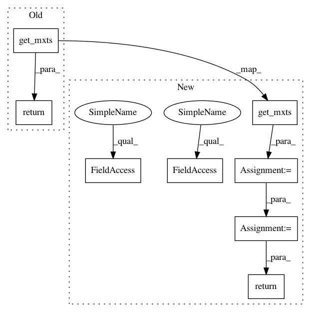

99fd2f42d951c0e1e46c5c556d9c2f87a0bda733,deeplift/blobs.py,Pool2D,_get_mxts_increments_for_inputs,#Pool2D#,730
Before Change
def _get_mxts_increments_for_inputs(self):
input_act_vars = self._get_input_activation_vars()
return B.pool2d_grad(
pool_out=self.get_mxts(),
pool_in=input_act_vars,
pool_size=self.pool_size,
strides=self.strides,
border_mode=self.border_mode,
ignore_border=self.ignore_border,
pool_mode=self.pool_mode
)
class Flatten(SingleInputMixin, OneDimOutputMixin, Node):
After Change
def _get_mxts_increments_for_inputs(self):
input_act_vars = self._get_input_activation_vars()
out_grads = self.get_mxts()
if (self.pool_mode == B.PoolMode.max):
//For maxpooling, an addiitonal scale factor may be needed
//in case all the inputs don"t have the same reference.
//multiply by diff-from-default of output here,
//and divide by diff-from-default of output later
out_grads = out_grads*self._get_diff_from_default_vars()
to_return = B.pool2d_grad(
out_grad=out_grads,
pool_in=input_act_vars,
pool_size=self.pool_size,
strides=self.strides,
border_mode=self.border_mode,
ignore_border=self.ignore_border,
pool_mode=self.pool_mode)
if (self.pool_mode == B.PoolMode.max):
//rescale back down according to diff-from-default of inputs
pseudocounted_inp_diff_default = pseudocount_near_zero(to_return)
to_return = to_return/pseudocounted_inp_diff_default
return to_return
class Flatten(SingleInputMixin, OneDimOutputMixin, Node):
In pattern: SUPERPATTERN
Frequency: 3
Non-data size: 8
Instances
Project Name: kundajelab/deeplift
Commit Name: 99fd2f42d951c0e1e46c5c556d9c2f87a0bda733
Time: 2016-08-07
Author: avanti.shrikumar@gmail.com
File Name: deeplift/blobs.py
Class Name: Pool2D
Method Name: _get_mxts_increments_for_inputs
Project Name: kundajelab/deeplift
Commit Name: 99fd2f42d951c0e1e46c5c556d9c2f87a0bda733
Time: 2016-08-07
Author: avanti.shrikumar@gmail.com
File Name: deeplift/blobs.py
Class Name: Pool2D
Method Name: _get_mxts_increments_for_inputs
Project Name: kundajelab/deeplift
Commit Name: 8edfa441b61a8ecf11515e6007a9e21054dbad19
Time: 2016-12-09
Author: avanti.shrikumar@gmail.com
File Name: deeplift/blobs/convolution.py
Class Name: Conv1D
Method Name: _get_mxts_increments_for_inputs
Project Name: kundajelab/deeplift
Commit Name: 8edfa441b61a8ecf11515e6007a9e21054dbad19
Time: 2016-12-09
Author: avanti.shrikumar@gmail.com
File Name: deeplift/blobs/convolution.py
Class Name: Conv2D
Method Name: _get_mxts_increments_for_inputs